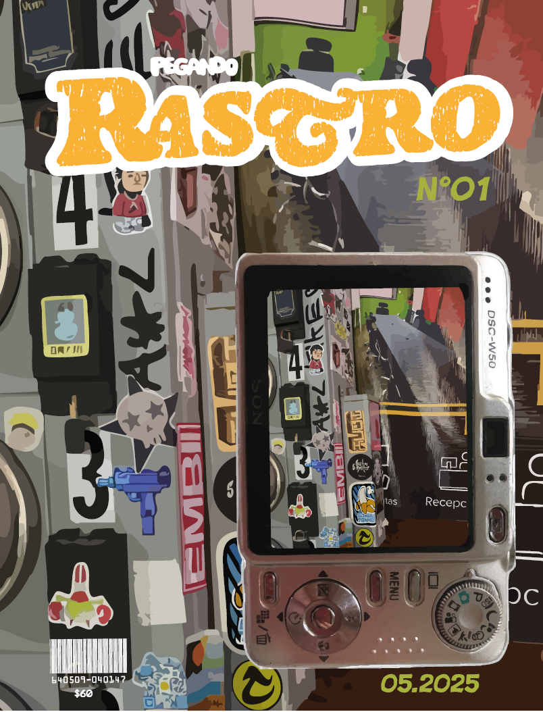

Números publicados
Rastro nace del deseo de mirar la ciudad con otros ojos. De rastrear los mensajes que no están en espectaculares ni noticieros, sino en muros, postes, banquetas, puertas oxidadas. En calcomanías pegadas con furia o con ternura. En papeles que gritan, aunque los arranquen.
